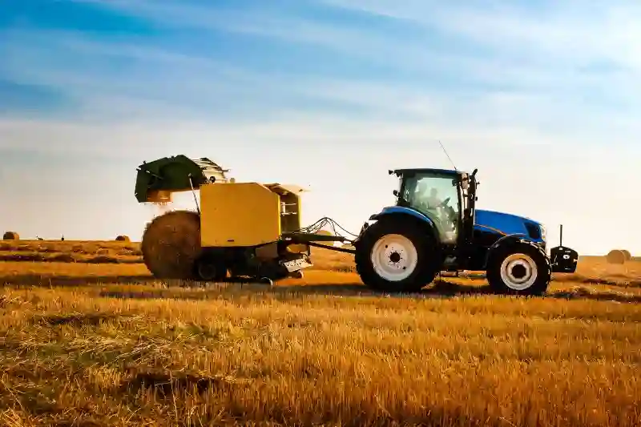
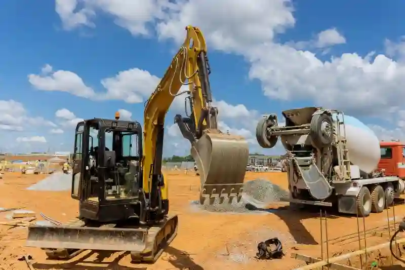
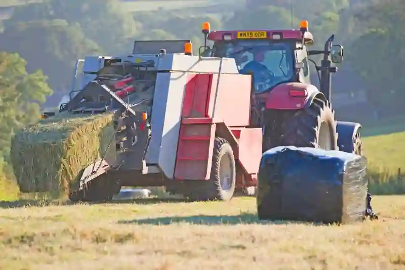
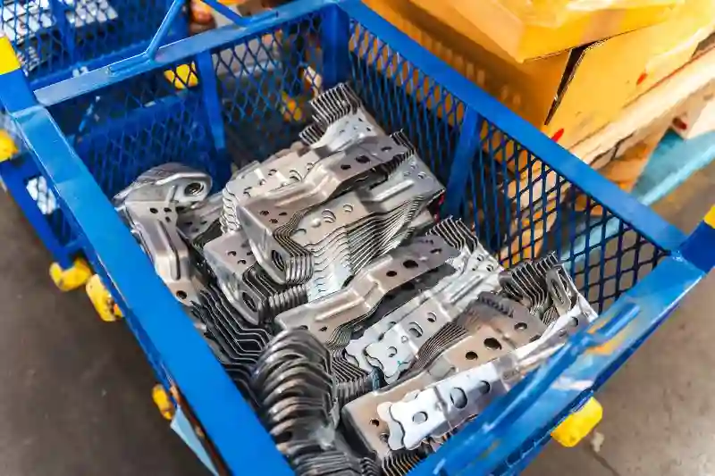

Tarım ve İnşaat Makineleri Özel Talaşlı İmalat Hizmetleri
Tarım ve inşaat sektörlerinde kullanılan makinelerin güvenilir, dayanıklı ve uzun ömürlü olabilmesi için yüksek hassasiyete sahip özel imalat süreçlerine ihtiyaç duyulur. Bu noktada Aymaksan Makine, sektörel gereksinimleri karşılayan profesyonel üretim altyapısı ile tarım ve inşaat makineleri özel talaşlı imalatı alanında güçlü bir çözüm ortağı olarak faaliyet gösterir. CNC işleme teknolojilerinin sağladığı yüksek doğruluk oranı, kaynak-montaj entegrasyon kabiliyeti ve gelişmiş kalite kontrol süreçleri sayesinde, sektörün dinamik ihtiyaçlarına uygun, sorunsuz çalışan mekanik parçalar üretmek mümkün olur.
Bu sayfa, Aymaksan’ın uzmanlığını yalnızca bir üretim hizmeti olarak değil, aynı zamanda sektörel dönüşüme katkı sağlayan uzun vadeli bir mühendislik yaklaşımı olarak ele alır. Tarım makineleri, inşaat ekipmanları, ataşmanlar, hidrolik sistem bileşenleri ve çeşitli yapısal parçalar için geliştirilen çözümler, zorlu çalışma koşullarında performans kaybı göstermeyecek şekilde üretilir. Bu kapsamda, firmamızın hem yüksek adetli seri üretimlerde hem de düşük adetli özel projelerde güvenilir bir üretim partneri olması amaçlanır.
Tarım ve inşaat alanlarında ihtiyaç duyulan yedek parça, bağlantı elemanı ve mekanik bileşenlerin üretiminde kullanılan tüm yöntemler, modern CNC makinelerimizin sağladığı yüksek hassasiyet avantajıyla birleştirilir. Bu doğrultuda tarım ve inşaat ekipmanları imalatı süreçlerinde, tolerans hassasiyeti yüksek çelik, alüminyum ve paslanmaz malzemelere yönelik işleme altyapısı ile optimum sonuç elde edilir. Aynı zamanda prototip, Ar-Ge desteği ve proje bazlı üretim hizmetleri, sektör paydaşlarının ürün geliştirme süreçlerine büyük katkı sağlar.
Özellikle tarım ve inşaat ekipmanları CNC imalatı alanında çalışan firmalar için üretim kalitesi, maliyet optimizasyonu ve teslimat süreleri kritik öneme sahiptir. Aymaksan Makine’nin makine parkında yer alan PUMA 280L CNC Torna, Dahlih MCV-1450 Dik İşleme Merkezi, SB-20R Tip G Otomatik Torna, TIG ve MIG kaynak makineleri gibi ekipmanlar, bu gereksinimleri eksiksiz karşılamak üzere seçilmiştir. Bu sayede, karmaşık geometrilere ve yüksek dayanım gerektiren parçalara yönelik üretim süreçleri sorunsuz şekilde tamamlanır.




Sektörde artan rekabet, üretim süreçlerinde akıllı teknolojilerin kullanımını zorunlu kılarken, Aymaksan’ın CAD/CAM destekli üretim yetkinliği ve ölçüm laboratuvarı entegrasyonu, tüm projelerde maksimum verimlilik sağlar. Ayrıca Ar-Ge destekli parça geliştirme kabiliyeti, yeni nesil tarım makineleri ve modern inşaat ekipmanları için yenilikçi çözümler üretilebilmesini mümkün kılar.
Burada “Tarım ve İnşaat Makineleri Özel Talaşlı İmalat Hizmetleri” başlığını yalnızca bir üretim tanımı olarak değil; kalite, mühendislik, maliyet verimliliği ve sürdürülebilir üretim anlayışının birleşimi olarak ele alıyoruz. Bu sektörlere yönelik üretimde her bir parçanın, son kullanımda kritik bir role sahip olduğunun bilinciyle hareket ediyoruz.
Tarım ve İnşaat Makinelerinde Hassas Üretimin Önemi
Tarım ve inşaat makineleri, yüksek zorlanma altında çalışan ekipmanlardır ve üretilecek parçaların yalnızca dayanıklı olması değil, aynı zamanda hassas toleranslarla işlenmiş olması gerekir. Bu nedenle tarım ve inşaat makineleri özel talaşlı imalatı, yalnızca standart bir üretim süreci değildir; mühendislik analizleri, malzeme optimizasyonu, doğru işleme stratejisi ve uygun kalite kontrol adımlarının bütünüdür.
Tarım makinelerinde kullanılan bıçak sistemleri, şaft parçaları, gövde bağlantı elemanları gibi bileşenler, çalışma esnasında sürekli titreşim ve yük değişimine maruz kalır. İnşaat sektöründe kullanılan kepçe dişlileri, hidrolik bağlantılar, ataşman ara parçaları ve çelik konstrüksiyon bileşenleri ise yüksek mukavemet ve yorulma dayanımı gerektirir. Bu tür parçaların üretiminde tolerans hatası, performans kaybına veya ekipmanın tamamen devre dışı kalmasına neden olabilir.
Bu nedenle Aymaksan Makine, üretim süreçlerini yalnızca makine bazlı değil, entegre mühendislik yaklaşımıyla yönetir. CAD/CAM tabanlı üretim altyapısı, karmaşık geometrilere sahip parçaların modellenmesine, simülasyonuna ve hızlı şekilde üretime alınmasına olanak tanır. Bu süreç, tarım ve inşaat ekipmanları imalatı kapsamındaki parçaların yüksek doğruluk ve tekrarlanabilirlik ile üretilmesini sağlar.
Bu yaklaşım aynı zamanda tarım ve inşaat ekipmanları cnc imalatı sürecinde, çok eksenli frezeleme ve kayar otomat işleme tekniklerinin verimliliğini artırarak, hem maliyetleri azaltır hem de üretim süresini kısaltır.
Projeni Başlat
Tarım ve İnşaat Makineleri İçin Özel Talaşlı İmalat Süreçleri
Tarım ve inşaat sektörlerinde kullanılan makinelerde yer alan parçaların her biri, çalışma esnasında yüksek darbe, aşınma, yük ve titreşim altında performans göstermek zorundadır. Bu yüzden üretim aşamasında hem malzeme seçimi hem de işleme yöntemleri titizlikle planlanmalıdır. Aymaksan Makine olarak tarım ve inşaat makineleri özel talaşlı imalatı süreçlerinde yalnızca CNC işleme kabiliyetine güvenmekle kalmaz, aynı zamanda mühendislik analizleri ve üretim optimizasyonu ile kaliteyi güvence altına alırız.
Özel talaşlı imalat süreci; malzeme hazırlığı, CAD/CAM destekli işleme stratejisinin belirlenmesi, CNC programlama, işleme operasyonları, yüzey düzeltme, kalite kontrol ve nihai montaj gibi fazlardan oluşur. Her faz, sektörün gerektirdiği dayanıklılık ve tolerans hassasiyetlerini sağlayacak şekilde düzenlenir. Özellikle çelik, dövme çelik, paslanmaz çelik ve alüminyum alaşımları gibi yoğun kullanılan malzemelerde, 3 eksen, 4 eksen ve kayar otomatik işleme tekniklerinin birlikte kullanılması, üretimin tekrarlanabilirliğini artırır.
Tarım ekipmanlarında kullanılan şaft sistemleri, bağlantı milleri, bıçak yatakları ve gövde parçaları, inşaat makinelerinde ise ataşman plakaları, hidrolik ara parçalar, çelik destek elemanları ve bağlantı adaptörleri özel işleme gerektiren kritik bileşenlerin başında gelir. Bu parçaların her biri, yüksek yük altında uzun süre çalışacak şekilde tasarlanır ve sektörün ihtiyaç duyduğu mekanik mukavemet özelliklerini karşılayacak toleranslarda işlenir.
Bu kapsamda üretim süreçlerimizde hem tarım ve inşaat ekipmanları imalatı hem de tarım ve inşaat ekipmanları cnc imalatı taleplerine yanıt verebilecek güçlü bir makine parkı ve teknik kadro bulunmaktadır. Modern CNC teknolojileri, özel geometriye sahip tarım ekipmanı parçalarının hızlı üretimini sağlarken, inşaat sektöründe kullanılan ataşman ve konstrüksiyon bileşenleri için yüksek kesme derinliği ve stabil işleme kapasitesi sunar. Böylece her iki sektörün de zorlu çalışma koşullarına dayanabilecek nitelikli bileşenler üretilir.
CNC Tornalama ve Frezeleme Çözümleri
Aymaksan Makine’nin üretim altyapısının temelini CNC tornalama ve frezeleme sistemleri oluşturur. Yüksek hassasiyetli parçaların üretilmesinde hem dik işleme merkezlerimiz hem de çok eksenli CNC tornalarımız etkin bir rol oynar. Bu sayede, çap işlemlerinden karmaşık yüzey işleme operasyonlarına kadar geniş bir üretim hattı oluşturulur.
CNC tornalama süreçleri, tarım makinelerinde kullanılan miller, ara bağlantı elemanları, dişli bağlantıları gibi döner simetriye sahip parçaların üretiminde aktif olarak kullanılır. İş makinelerinde ise hidrolik bağlantı parçaları, geçme milleri ve rot bağlantılarının üretiminde kritik bir rol üstlenir. Yüksek hassasiyetli tornalama operasyonları, hem metalin stabil şekilde işlenmesini sağlar hem de ekipmanın çalışma esnasındaki titreşim yükünü azaltarak daha uzun ömürlü çözümler ortaya çıkarır.
Frezeleme süreçlerinde ise çok eksenli dik işleme merkezlerimiz sayesinde karmaşık geometriler, ışınsal yüzeyler, delik grupları, kanal yapıları ve çoklu yüzey referanslı parçalar sorunsuz şekilde işlenir. Bu kapsamda yürütülen üretim operasyonları, tarım ve inşaat makineleri özel talaşlı imalatı faaliyetlerinin en kritik adımlarından biri olarak kabul edilir.
Yatay ve dik eksenli işleme kombinasyonlarının kullanılması, özellikle çelik konstrüksiyon destek parçaları ve ataşman bileşenlerinde büyük avantaj sağlar. Bu yöntemler, iş makinesi parçalarında ihtiyaç duyulan dayanım şartlarının karşılanmasını kolaylaştırırken, tarım makineleri parçalarının üretiminde ise hafiflik ve dayanım optimizasyonu sunar.
Prototip Üretim ve Ar-Ge Destek Süreçleri
Tarım ve İnşaat Makineleri Özel Talaşlı İmalat için tarım ve inşaat makineleri sektörlerinde yenilikçi çözümler geliştirmek isteyen firmalar için prototipleme ve Ar-Ge destek süreçleri oldukça önemlidir. Aymaksan Makine, CAD/CAM tabanlı hızlı prototipleme altyapısıyla, yeni bir parçanın üretilebilirliğinin test edilmesini kolaylaştırır. Bu sayede hem üretim maliyetleri hem de geliştirme süresi önemli ölçüde azaltılır.
Prototip üretimlerinde kullanılan işleme teknikleri, sektöre özel gereksinimlerin belirlenmesine katkı sağlar. Tarım makinelerinde kullanılan yeni tip bağlantı elemanları veya inşaat makinelerine özel hafifletilmiş ataşman parçaları gibi bileşenler, hem fonksiyonel testlere hem de saha kullanımı öncesi dayanım analizlerine tabi tutulur.
Ar-Ge destekli projelerde, rutin talaşlı imalat yöntemlerinin ötesine geçen mühendislik çözümleri kullanılır. Bu aşamada yapılan simülasyonlar, parça üzerinde oluşacak kuvvet dağılımını analiz ederek daha dayanıklı tasarımların ortaya çıkmasına yardımcı olur.
Projeni Başlat
Üretimde Kullanılan Malzemeler ve İşleme Toleransları
Tarım ve inşaat makinelerinde kullanılan parçalar genellikle yüksek gerilim, aşınma ve dış etkenlere karşı dayanıklı malzemelerden üretilir. Bu nedenle üretim sürecinde yalnızca makine kapasitesi değil, aynı zamanda malzeme mühendisliği bilgisi de devreye girer. Aymaksan Makine, farklı sektörlerin gereksinimlerine göre çelik, dövme çelik, 4140/4340 alaşımlar, alüminyum 6082-7075 serisi, paslanmaz çelik 304-316 gibi geniş malzeme gruplarıyla çalışır. Her malzeme tipi için farklı kesme hızları, talaş kaldırma stratejileri, yüzey işleme yöntemleri ve tolerans hedefleri uygulanır.
Üretim sırasında uygulanan işleme toleransları, parçanın fonksiyonel bütünlüğü için kritik önem taşır. Tarım makinelerinde kullanılan hareketli bağlantılar, bıçak yatakları ve gövde ara elemanlarında tolerans sapması performans kaybı yaratabilir. İnşaat makinelerinde ise hidrolik bağlantı elemanlarının veya ataşman plakalarının tolerans dışı üretilmesi, ekipmanın çalışma sırasında yük dağılımının bozulmasına neden olur. Bu nedenle, Aymaksan Makine üretim hattında yapılan her operasyon, kalite kontrol süreçleriyle tam uyum içinde yürütülür.
Bu aşamada tarım ve inşaat makineleri özel talaşlı imalatı kapsamında belirlenen hedef tolerans aralıkları, teknik çizim gereksinimlerine göre ±0.01 mm seviyesine kadar indirilebilmektedir. Bu hassasiyet seviyesi, özellikle hassas bağlantı elemanlarının ve hareketli parçaların uzun ömürlü çalışması için kritik bir rol oynar. Böylelikle tarım ve inşaat ekipmanları imalatı sürecinde parçaların güvenilirliği artırılır ve montaj sırasında oluşabilecek olası uyumsuzlukların önüne geçilir.
Aynı kalite yaklaşımı, CNC işleme gerektiren tüm projelerde geçerli olduğundan, çok eksenli üretimlerde bile yüzey düzgünlüğü, hassas geometri ve boyutsal doğruluk elde edilir. Bu da tarım ve inşaat ekipmanları cnc imalatı taleplerinde en yüksek verimliliğin sağlanmasına imkân tanır.
Kalite Kontrol ve Ölçüm Laboratuvarı Süreçleri
Aymaksan Makine’nin üretim yaklaşımının merkezinde kalite bulunur. Parçaların yalnızca işlenmiş olması yeterli değildir; aynı zamanda ölçüsel doğruluğunun analiz edilmesi, yüzey pürüzlülüğünün kontrol edilmesi ve teknik çizime uygunluk testlerinin yapılması gerekir. Bu doğrultuda kalite kontrol süreçlerinde CMM ölçüm cihazları, 2D ölçüm sistemleri, yük testleri, yüzey pürüzlülüğü ölçerler ve mikrometre-kumpas gibi hassas ölçüm ekipmanları kullanılır.
Ölçüm laboratuvarı süreci, her parça için gerekli olan temel verileri oluşturur. Bu veriler; tolerans uyumu, yüzey kalitesi, işleme sırasında oluşabilecek mikroskobik deformasyonlar ve ısı kaynaklı değişimleri kontrol eder. Bu işlemler, hem ISO standartlarına uygunluk hem de sahada güvenilir çalışmayı garanti altına alır.
Bu aşamada üretilen raporlar, özellikle tarım makineleri üreticileri ve inşaat ekipmanları tedarikçileri için oldukça değerlidir. Çünkü birçok proje, CMM raporu olmadan kabul edilmemektedir. Aymaksan Makine’nin kalite kontrol altyapısı, bu gereklilikleri eksiksiz karşılayarak tarım ve inşaat makineleri özel talaşlı imalatı projelerini uluslararası standartlara uygun hale getirir.
Kalite kontrolün etkin şekilde uygulanması, yalnızca son ürün güvenliğini sağlamakla kalmaz; aynı zamanda seri üretimlerde tekrarlanabilirlik oranını artırır. Böylece tarım ekipmanı bağlantı parçaları, iş makinesi hidrolik bileşenleri ve konstrüksiyon parçaları her üretimde aynı kalite seviyesinde üretilir. Bu durum, tarım ve inşaat ekipmanları imalatı süreçlerinde kalite sürekliliği sağlar.
Tarım ve İnşaat Makineleri İçin Kaynak ve Montaj Hizmetleri
Tarım ve inşaat sektörlerinde kullanılan ekipmanların büyük kısmı, talaşlı imalatla üretilen mekanik parçalar ile kaynaklı konstrüksiyon yapıların birleşiminden oluşur. Bu nedenle, talaşlı imalat kadar kaynak ve montaj süreçlerinin de sektörel gereksinimlere uygun şekilde yönetilmesi kritik önem taşır.
Aymaksan Makine, MIG, MAG ve TIG kaynak tekniklerini kullanarak ağır yük altında çalışan konstrüksiyon parçalarının güvenli şekilde birleştirilmesini sağlar. Örneğin kepçe ataşman plakaları, destek kolları, bağlantı adaptörleri, tarım makinesi gövde birleşim plakaları ve makine şaseleri yüksek ısıl dayanım gerektiren kaynak yöntemleriyle bir araya getirilir.
Bu süreçlerde yüksek nüfuziyet, düzgün kaynak dikişleri ve ısıl deformasyonların kontrol altında tutulması önceliklidir. Böylece hem yapısal bütünlük korunur hem de montaj sonrasında parçaların uzun süreli kullanımda deformasyona uğraması önlenir. Kaynak-montaj hizmetleri, talaşlı imalatla üretilen parçaların doğru noktada birleştirilmesini sağlayarak, makine bütünlüğünü oluşturur.
Bu süreçler, sektörde artan kalite beklentileri doğrultusunda tarım ve inşaat makineleri özel talaşlı imalat işleri için tarım ve inşaat ekipmanları cnc imalatı ile birlikte uygulanarak uzun ömürlü, dayanıklı ve güvenli çözümler ortaya çıkarır.
Projeni Başlat
Tarım Makineleri İçin Üretilen Parça ve Bileşenler
Tarım makineleri, sahada uzun süre çalışan ve yüksek mekanik yük altındaki parçaların bir araya gelmesiyle oluşur. Bu nedenle üretilecek her bileşenin hem dayanıklı olması hem de doğru toleranslarda işlenmiş olması gerekir. Aymaksan Makine, tarım sektörüne özel üretim taleplerinde geniş bir yelpazede çözüm sunar. Bu çözümler, hem prototip geliştirme sürecinde hem de seri üretim gerektiren parça siparişlerinde sorunsuz şekilde uygulanır.
Tarım makinelerinde sıklıkla kullanılan bazı kritik parçalar arasında miller, şaft sistemleri, flanşlar, gövde bağlantı elemanları, yatak yuvaları, dişli ara parçaları, bıçak taşıyıcıları ve hidrolik bağlantı parçaları bulunur. Bu parçaların üretiminde yüksek yüzey kalitesi, titreşim direnci ve darbe dayanımı gereklidir. İşte bu noktada tarım ve inşaat makineleri özel talaşlı imalatı süreçleri, sektörün beklentilerini karşılamak için modern CNC işleme altyapısıyla uygulanır.
Tarım ekipmanlarında kullanılan bu parçaların hem performans hem de kullanım ömrünü doğrudan etkileyen bir diğer unsur, kullanılan malzeme türü ve işleme yöntemidir. Örneğin 4140 çelik alaşımlarının ısıl işlem sonrası talaşlı imalatı, yüksek kesme ivmesi gerektiren özel bir süreçtir. Bu yöntem, hem dayanım hem de elastikiyet gerektiren tarım ekipmanı bileşenlerinde sıkça uygulanır. Ayrıca, doğru ısıl işlem ve CNC işleme teknikleri bir araya getirildiğinde, tarım ve inşaat ekipmanları imalatı süreçlerinde optimum dayanım düzeyi elde edilir.
Tarım makineleri için üretilen parçaların bir kısmı tekil kullanım amaçlıyken, bir kısmı yıllık seri üretim olarak talep edilir. Aymaksan Makine, düşük adetli özel üretimden yüksek adetli seri imalata kadar esnek bir üretim yapısına sahiptir. Bu sayede üretim hattı, farklı proje türlerine hızla uyum sağlayabilir.
İnşaat Makineleri ve İş Ekipmanları İçin Üretilen Parçalar
İnşaat sektörü, yüksek mukavemet gerektiren çalışma koşullarına sahiptir. Bu nedenle iş makinelerinde kullanılan parçalar, darbe yükleri, sürtünme, aşınma ve yüksek basınç altında çalışabilecek şekilde tasarlanmalıdır. Aymaksan Makine, çok eksenli CNC işleme merkezleriyle inşaat ekipmanlarının gerektirdiği mekanik dayanım standartlarını sağlayan parçalar üretir.
İnşaat makinelerinde yaygın olarak üretilen parça tipleri arasında kepçe dişlileri, bağlantı adaptörleri, ataşman plakaları, çelik konstrüksiyon ara elemanları, hidrolik bağlantı parçaları, destek milleri, pivot mil grupları ve şase bağlantı parçaları yer alır. Bu parçaların üretimi, özellikle 4140-4340 ısıl işlem görmüş çeliklerde yüksek kesme dayanımı gerektiren operasyonlarla gerçekleştirilir.
Bu bileşenlerin üretiminde tarım ve inşaat ekipmanları cnc imalatı süreçlerinden yararlanılır; çünkü bu süreçler, yüksek hassasiyetli delik grupları, kanal yapıları, özel yüzeyler ve dar toleransların güvenilir şekilde oluşturulmasını sağlar. İnşaat sektöründe kullanılan ataşman parçalarının düzgün ve pürüzsüz yüzeylere sahip olması, hem montaj kolaylığı hem de uzun vadeli dayanım açısından büyük önem taşır.
İş makineleri için üretilen birçok parça, modüler sistemlere yönelik olarak tasarlandığından, tolerans uyumu kritik öneme sahiptir. Bu nedenle hem prototip hem de seri üretim aşamalarında tolerans hatalarının önüne geçmek adına hassas ölçüm sistemleri ile kalite kontrol süreçleri yürütülür. Böylece tarım ve inşaat makineleri özel talaşlı imalatı projelerinde maksimum geometrik doğruluk elde edilir.
Seri Üretim ve Proje Bazlı Üretim Yaklaşımı
Aymaksan Makine’nin üretim yapısının en önemli avantajlarından biri esnek üretim modelidir. Hem düzenli seri üretim taleplerine hem de proje bazlı özel imalat taleplerine aynı kalite standardında yanıt verebilecek bir altyapı oluşturulmuştur. Bu yaklaşım, özellikle tarım ve inşaat sektöründe faaliyet gösteren OEM üreticileri için büyük bir avantaj sağlar.
Seri üretim taleplerinde proses istikrarı, üretim tekrarlanabilirliği ve maliyet optimizasyonu ilk sırada gelir. Çoklu fikstürleme yöntemleri, otomatik çubuk sürücülü sistemler ve hızlı takım değiştirme ekipmanları sayesinde üretim süreci hızlandırılır. Böylece yüksek adetli siparişlerde teslimat süreleri kısalırken, üretim maliyetleri de optimize edilir.
Proje bazlı üretimlerde ise detaylı mühendislik çalışmaları, prototipleme ve test süreçleri devreye girer. CAD/CAM destekli üretim planlaması, özel geometrilere sahip parçaların doğrulukla işlenmesini sağlar. Bu tür projelerde en önemli konu, tasarım doğrulamasıdır. Parçanın kullanım alanına göre gerekli tüm mekanik analizler yapılır ve üretim sonrasında kalite kontrol aşaması tamamlanarak teslimat yapılır.
Bu kapsamlı yaklaşım, tarım ve inşaat makineleri özel talaşlı imalatı ile birlikte hem tarım ve inşaat ekipmanları imalatı hem de tarım ve inşaat ekipmanları cnc imalatı projelerinde yüksek memnuniyet yaratır. Aymaksan Makine, her iki üretim modelinde de mühendislik destekli yaklaşımıyla sektörel gereksinimleri fazlasıyla karşılayacak çözümler sunar.
Projeni Başlat
Tarım ve İnşaat Sektöründe Aymaksan Makine’nin Sağladığı Üretim Avantajları
Aymaksan Makine’nin tarım ve inşaat sektörlerine yönelik üretim hizmetleri, yalnızca yüksek kaliteye dayalı bir imalat süreçleri bütünü değildir; aynı zamanda mühendislik odaklı bir üretim yönetimidir. Bu yaklaşım, sektörde uzun yıllardır süregelen ihtiyaçların doğru analiz edilmesiyle şekillenir ve kullanıcı beklentilerine uygun sistematik çözümler sunar.
Tarım makinelerinin bakım ve yedek parça temin süreçlerinde yaşanan gecikmeler, saha operasyonlarının aksamasına neden olabilir. Bu nedenle, parçaların hem dayanıklı hem de hızlı üretilmesi gerekir. Aymaksan, üretim sürecinde modern CNC teknolojilerini kullanarak, tarım ve inşaat makineleri özel talaşlı imalatı taleplerine yüksek doğruluk ve tekrarlanabilirlik sağlar. Bu, tarım işletmeleri ve OEM tarım makinesi üreticileri için doğrudan operasyonel verimliliğe katkı sunar.
İnşaat sektöründe ise güvenlik ve dayanım kriterleri daha da ön plana çıkar. Şantiye koşullarında çalışan makinelerin ataşmanları, hidrolik bağlantı parçaları, pivot milleri ve konstrüksiyon elemanları ciddi mekanik stres altında çalışır. Bu nedenle, tarım ve inşaat ekipmanları imalatı süreçlerinde uygulanan mühendislik ve kalite kontrol tedbirleri, ekipmanın sahada sorunsuz çalışmasını sağlar.
Bu kapsamda CAD/CAM tabanlı üretim, çok eksenli CNC işleme, kayar otomatik torna sistemleri ve gelişmiş kaynak yöntemleri bir arada kullanılarak son derece güvenilir mekanik parçalar üretilir. Modern talaşlı imalat teknolojileri sayesinde hem prototip üretimi hem de seri üretim süreçlerinde hız ve esneklik sağlanır. Bu durum, üretim maliyetlerini optimize ederken kalite standardını da yükseltir.
Tüm bu avantajlar, Aymaksan Makine’yi özellikle tarım ve inşaat ekipmanları cnc imalatı alanında tercih edilen bir çözüm ortağı haline getirir. Müşteriler, teknik gereksinimleri eksiksiz karşılayan, tolerans hassasiyeti yüksek parçalarla daha güvenli ve daha verimli çalışma olanağı elde eder.
Müşteriye Özel Çözümler ve Uygulama Senaryoları
Aymaksan’ın üretim yaklaşımının merkezinde, her müşteriye özel proje yönetimi bulunur. Tarım ve inşaat makineleri farklı çalışma koşullarına sahiptir ve bu nedenle tek tip imalat yaklaşımı çoğu zaman yeterli olmaz. Bu sebeple, her proje için özel bir üretim planı, işleme stratejisi ve kalite süreçleri uygulanır.
Tarım makinelerinde kullanılan özel bağlantı elemanları, kesici takım yuvaları, şaft sistemleri veya hidrolik ara parçaların her biri için ayrı mühendislik hesaplamaları yapılır. Bu hesaplamalar, doğru malzeme seçimi, optimum işleme parametreleri ve doğru yüzey işlemlerini belirler. Böylece tarım ve inşaat makineleri özel talaşlı imalatı süreci tam mühendislik uyumu içinde ilerler.
İnşaat sektöründe ise ataşman parçalarının, çelik konstrüksiyon destek elemanlarının veya hidrolik bağlantı bileşenlerinin mekanik yük dayanımları test edilerek, parçanın doğru kalınlık ve geometriye sahip olması sağlanır. Bu süreç sayesinde tarım ve inşaat ekipmanları imalatı projelerinde maksimum güvenlik standartları elde edilir.
Aymaksan’ın esnek üretim modeli, müşterilerin hem acil ihtiyaçlarında hem de uzun vadeli üretim planlamalarında avantaj sağlar. Özellikle teknik çizime dayalı imalat projelerinde, hızlı geri dönüş ve doğru üretim metodolojisi büyük bir fark yaratır.
Tarım ve İnşaat Makineleri İçin CNC Çözümlerinin Geleceği
Endüstri 4.0 ile birlikte CNC işleme teknolojileri daha akıllı, daha hızlı ve daha verimli hale gelmiştir. Tarım ve inşaat makineleri için üretim yapan firmaların bu dönüşüme ayak uydurması, rekabet avantajı kazanmasını sağlar. Bu noktada Aymaksan Makine, yüksek teknolojiye dayalı üretim altyapısı ve güncel işleme stratejileriyle sektörün gerektirdiği yeni nesil çözümleri sunmaktadır.
Akıllı üretim yazılımları, gerçek zamanlı kesme verilerinin izlenmesi, takım ömürlerinin takip edilmesi ve üretim süreçlerinin otomatik kontrolü gibi özellikler, daha hatasız bir işleme süreci oluşturur. Bu dönüşüm, hem tarım ve inşaat ekipmanları cnc imalatı hem de özel talaşlı imalat projelerindeki verimliliği artırır.
Ayrıca malzeme teknolojileri gelişmeye devam ettikçe, daha dayanıklı, daha hafif ve daha yüksek performans sunan parçaların üretimi mümkün hale gelmektedir. Bu gelişmeler, tarım ve inşaat makinelerinin sahada daha az bakım gerektirmesini ve daha uzun ömürlü olmasını sağlar.
Sonuç – Aymaksan Makine ile Güvenilir, Hassas ve Mühendislik Odaklı Üretim
Bu sayfada detaylandırılan tüm süreçler, Aymaksan Makine’nin tarım ve inşaat sektörlerine sunduğu yüksek standartlardaki çözüm yaklaşımını yansıtmaktadır. Hem hassas CNC işleme altyapımız hem de mühendislik odaklı üretim modelimiz sayesinde, sektörde ihtiyaç duyulan her türlü parçayı güvenle üretebilmekteyiz.
Tarım ve inşaat makineleri özel talaşlı imalatı, tarım ve inşaat ekipmanları imalatı ve tarım ve inşaat ekipmanları cnc imalatı odaklı üretim kabiliyetimiz; hızlı teslimat, yüksek hassasiyet, kalite kontrol süreçleri, deneyimli teknik ekip ve güncel teknolojik altyapıyla birleştiğinde, müşterilerimiz için uzun vadeli ve sürdürülebilir çözümler ortaya çıkarır.
Tarım makineleri üreticileri, inşaat ekipmanı tedarikçileri ve endüstriyel makine üreticileri için güvenilir bir çözüm ortağı olmak, Aymaksan Makine’nin temel misyonlarından biridir. Proje bazlı imalatlardan seri üretimlere kadar tüm süreçlerde aynı kalite standardını koruyarak, sektörde sürdürülebilir iş birlikleri oluşturmayı hedefliyoruz.
Projeni Başlat
Şu linklerde yer alan sayfaları ve web sitelerini incelemenizi de tavsiye ederiz.
Dış Kaynaklar
- TSE – Türk Standardları Enstitüsü | Türkiye’nin ulusal standart kurumu; standart yayınları, uygunluk değerlendirme hizmetleri vb. içerir.
- TS EN ISO 9001 Kalite Yönetim Sistemi – Türk Standardları Enstitüsü | ISO 9001 kalite yönetim standardı.
- Uygunluk Değerlendirme Hizmetleri – Türk Standardları Enstitüsü | TSE’nin uygunluk değerlendirme ve belgelendirme kapsamı ile ilgili resmi sayfası.
- Bandırma Ticaret Odası – Tarım Makineleri Sektör Raporu | Tarım makinaları sektörünün genel durumu, üretim ve ticaret verileri.
- Dergipark Akademik – Tarım Makinaları ve Traktör Deneylerinde TS EN ISO/IEC 17025 Standardı ve Akreditasyonun Önemi | TS EN ISO/IEC 17025 standardı ve tarım makineleri deney süreçleri hakkında akademik analiz.
- T.C. Tarım ve Orman Bakanlığı – TARIMSAL MEKANİZASYON SEKTÖR POLİTİKA BELGESİ 2018-2022 | Türkiye’de tarımsal mekanizasyon ve sektör politikasına dair resmi belge.
- Tarım Makinaları Derneği | Türkiye tarım makineleri paydaşlarının yer aldığı sektörel dernek sitesi.
- TARMAKBİR – Türk Tarım Alet ve Makinaları İmalatçıları Birliği | Tarım makineleri üreticilerinin bir araya geldiği sektörel birlik portalı.
- İMDER – Türkiye İş Makineleri Distribütörleri ve İmalatçıları Birliği | Türkiye’de iş ve inşaat makineleri sektörü için kurulmuş dernek sitesi (sektörel bilgiler ve haberler içerir).
İç Kaynaklar – Makine Parkımız
- DAHLIH MCV-1450 Dik İşleme Merkezi
- Doosan / DN Solutions PUMA 280L CNC Torna
- TOS SUI 50 Universal Torna
- SB-20R Tip G Otomatik Torna
- PoWerPlus TIG 320 AC/DC Pulse
- VARIO STAR 304-G MIG MAG Kaynak Makinesi
İç Kaynaklar – Hizmetlerimiz